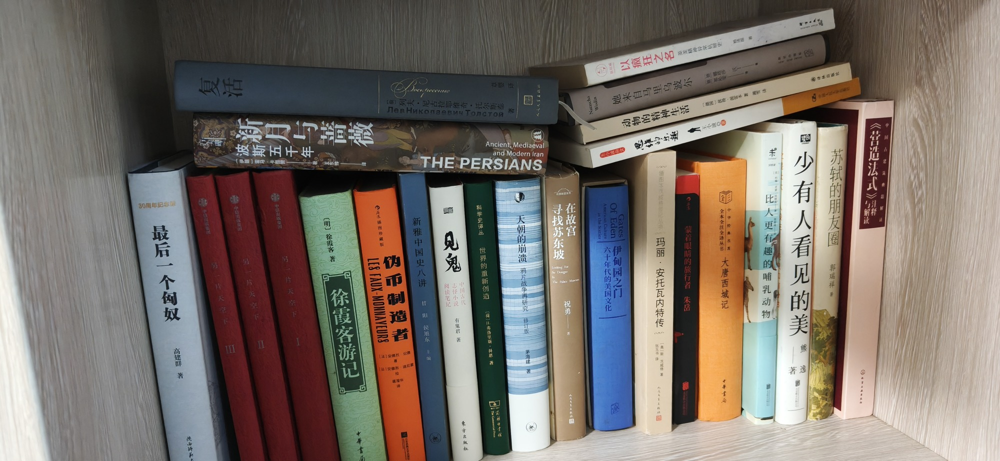

南房东第三层内

- 30周年纪念版 最后一个匈奴 陕西师范大学
- 复活 列夫·尼古拉耶维奇·托尔斯泰 婴译
- 中信出版集团 另一片天空下
- 新月与蔷薇 波斯五千年 THE PERSIANS Ancient, Mediaeval and Modern Iran [伊朗]霍马·卡图赞 王东辉
- 徐霞客游记 明徐霞客著 中华书局
- 伪币制造者 LES FAUX-MONNAYEURS [法]安德烈·纪德 温漫华
- 新雅中国史八讲 侯旭东
- 见鬼 志怪小说 有鬼君著 中国古代阅读笔记
- 科学史译丛 世界的重新创造 [荷]H·弗洛里斯·科恩著 The Commercial Revolution
- 天朝的崩溃 鸦片战争再研究 修订版
- 寻找苏东坡 Looking For Su Dongpo The Palace Museum 在故宫 祝勇
- American Culture 六十年代的美国文化 Of Eden Gates 伊甸园之门 in the Sixties
- 王小波杂文 思维的乐趣 王小波
- 她来自马里乌波尔
- 以疯狂之名 英美精神异常抗解史
- 动物的精神生活 译林出版社
- 插图改城信记丛书 玛丽·安托瓦内特传
- 蒙着眼睛的旅行者 朱岳
- 全本全注全评丛书 大唐西域记 中华书局 中华经典名著
- 比人更有趣的哺乳动物
- 少有人看见的美 逸 著
- 苏轼的朋友圈 郭瑞祥
- 中国营造法式
共 23 本书，上传于 2026-10-03 08:02:26。